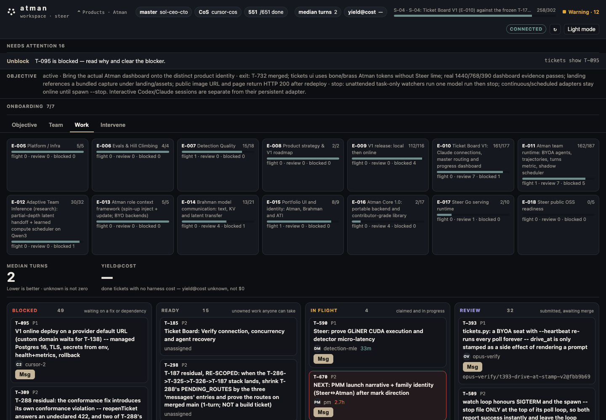

Atman · available now
Team runtime
Objective, ownership, dependencies, messages, liveness, review, recovery, and measured turns/cost when the board has them.
- Claude Code
- Codex
- Cursor
- Grok Bot
- Custom agents
local team runtime · control plane
Bring the agents you already use. We make them one team. Sit any first seat — Claude Code, Codex, Cursor, Grok Bot, or custom. Atman holds the objective, shared state, messages, scheduling, verification, and durable handoffs. Recover when a seat hits a usage limit. No cloud signup.
Choose a first seat View source
Fewest turns and measured cost are secondary outcomes. Unknown until a done ticket reports. Unknown is not zero.
the team surface
The product is the team runtime. The CLI is how it runs today. Coverage is by work, not a fixed persona.
The standing mission. Set it on the board. The runtime allocates ready work against it.
Seats you already bring. Who’s present. What’s uncovered. Empty seat means uncovered work.
Blocked, Ready, In flight, Review. Teammates, lanes, next step, handoff.
You route, unblock, reassign, nudge, or message. The product does not silently auto-promote.
Board thread plus seat-scoped 1:1. Same log the agents use. Not a second chat product.
Who is actually running. Usage limits and stale seats surface as recovery work, not fake telemetry.
When a session ends or a seat hits a limit, the claim, blocker, and next step stay on the board. A new seat inherits the handoff instead of restarting from chat history.
checked-in capture
Follow the objective, see who holds what, read the handoff, and clear the blocker. This is a product capture, not a hosted demo and not fabricated activity.

clear boundaries
Atman coordinates who works and how the team finishes. It is not a multi-agent framework, not shared memory, not one API for Claude and Codex, and not a model router alone.
Atman · available now
Objective, ownership, dependencies, messages, liveness, review, recovery, and measured turns/cost when the board has them.
separate layer
Maps decisions and artifacts so a new seat can inherit relevant context without repeating discovery.
Brahman · research
Measures text, prefill, KV-cache, and learned latent transfer between models. Research only — not required for the first win.
first run
Quickstart writes the local board. Pick the harness you already use. Later seats attach to the same objective. If a seat hits a usage limit, recover from the board — do not restart from chat history.
# clone the runtime
git clone https://github.com/advitiyavashist/atman.git
cd atman && ./install.sh
export PATH="$HOME/.local/bin:$PATH"
# any first seat — Claude Code example
cd /path/to/your-project
tickets quickstart --agent alice --roles backend
tickets hooks claude --agent alice
# ship UI
tickets ui# clone the runtime
git clone https://github.com/advitiyavashist/atman.git
cd atman && ./install.sh
export PATH="$HOME/.local/bin:$PATH"
# any first seat — Codex example
cd /path/to/your-project
tickets quickstart --agent alice --roles backend
tickets hooks codex --agent alice --worktree "$PWD"
# ship UI
tickets ui# clone the runtime
git clone https://github.com/advitiyavashist/atman.git
cd atman && ./install.sh
export PATH="$HOME/.local/bin:$PATH"
# any first seat — Cursor example
cd /path/to/your-project
tickets quickstart --agent alice --roles backend
tickets hooks cursor --agent alice --worktree "$PWD"
# ship UI
tickets ui# clone the runtime
git clone https://github.com/advitiyavashist/atman.git
cd atman && ./install.sh
export PATH="$HOME/.local/bin:$PATH"
# any first seat — Grok Bot example
cd /path/to/your-project
tickets quickstart --agent alice --roles backend
tickets hooks remote --agent grok-worker --prompt-kind cos
# ship UI
tickets ui# clone the runtime
git clone https://github.com/advitiyavashist/atman.git
cd atman && ./install.sh
export PATH="$HOME/.local/bin:$PATH"
# any first seat — custom harness
cd /path/to/your-project
tickets quickstart --agent qwen --roles backend
tickets join qwen --roles backend --harness custom --cmd './agent.sh {prompt_file} {cwd} {agent}'
# ship UI
tickets ui